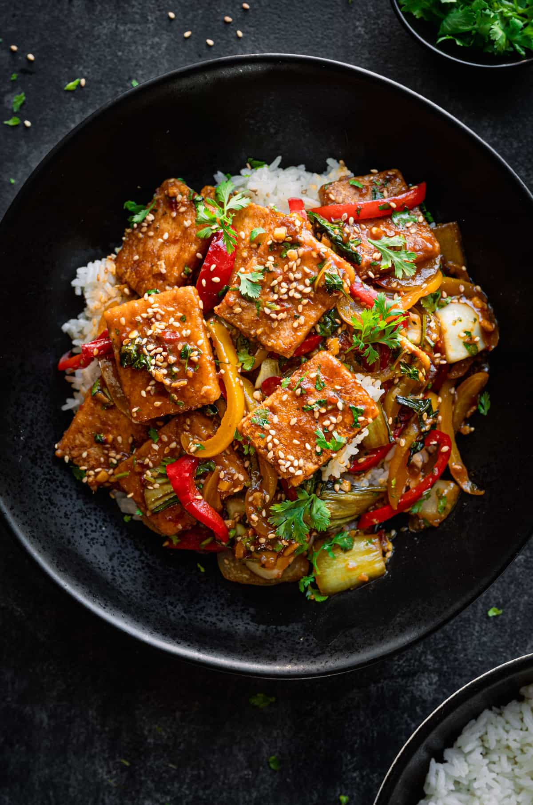

Tofu Stir Fry

Every bite of this Tofu Stir Fry will transport you to your favorite Chinese restaurant!
Packed with gourmet flavors, it’s deeply savory, a little spicy, and perfectly saucy. Easy
to customize with your favorite vegetables!
Say hello to this not-so-average Tofu Stir Fry! It’s bursting with incredible flavors, has
everything you’d expect from a Chinese restaurant-style stir fry, and is quick and easy to
make at home.
Ingredients
- 3 to 4 tablespoons
- 1 (14-ounce/400g) block extra-firm
- ½ teaspoon kosher salt
- ½ teaspoon white pepper
- ½ teaspoon garlic powder
- Heaping 1/4 teaspoon Chinese five spice powder
- 3 tablespoons cornstarch or arrowroot powder
- 1 ½ tablespoons soy sauce
- 1 ½ tablespoons rice vinegar
- 2 tablespoons hoisin sauce
- 2 tablespoons Shaoxing wine
- 1 tablespoon organic brown sugar
- 1 to 2 tablespoons chili-garlic sauce
- 3 tablespoons veggie broth or water
- 2- inch piece ginger
- 4 garlic cloves
- 14 to 16 oz vegetables of choice
- 1 teaspoon cornstarch
- 2 teaspoons black sesame seeds or toasted white sesame seeds
- 2 teaspoons toasted sesame oil
- ¾ cup (12g) cilantro leaves and tender stems, roughly chopped
- 3 to 4 cups cooked white or brown rice
Directions
- Drain tofu and wrap in a thin dish towel. Weight down with a heavy cookbook or skillet.
Press for 10-15 min, changing the towel halfway through. Meanwhile, stir together the
Sauce ingredients in a bowl or measuring cup, and prep your veggies
and aromatics.
- Cut the tofu. Slice the tofu into four equal squares. Flip each square on its side and
then slice into squares, ⅓” wide (~1 cm). Transfer to a large bowl or shallow baking
pan.
- Coat the tofu. In a small bowl, combine the salt, white pepper, garlic powder, five
spice powder (if using) and cornstarch. Sprinkle half over the tofu, flip the tofu over,
and sprinkle with the rest, tossing gently to coat with your hands.
- Fry the tofu. Line a cutting board or large plate with paper towels. Open some windows,
as it will get smoky if you’re using a wok. Heat a flat-bottomed wok over medium-high
heat until you start to see light wisps of smoke. Only then add 3 TBSP of the oil (this
prevents sticking). Swirl the pan to get oil up the sides (See Note 1 if you don't have
a wok). Carefully add tofu. Cook 3 to 5 minutes, shaking the pan every minute for even
cooking, until golden brown on the bottom. Flip and toss the tofu and repeat for 2 to 4
min, until golden brown but not charred on the bottom (reduce the heat if it starts to
char). Transfer tofu to the paper towel-lined surface to absorb excess oil. Wipe out
the pan. NOTE: Depending on your wok size and tofu weight, it may not all fit in a wok.
You'll get the best results frying in 2 batches.
- Finish the stir fry. Return the wok to the stove. Heat over high until smoking, then
add the remaining 1 TBSP oil. Add garlic and ginger, and stir fry for 20 to 30 seconds,
tossing frequently so they don’t stick. Add prepped veggies, and stir fry for 1 to 1.5
minutes (add sturdy veg like carrots or broccoli for 1-2 minutes, then add softer veg
like bell peppers for 1 to 1.5 min). Add the Sauce and stir fry for 2 ½ minutes, then
add any tender vegetables (e.g., bok choy leaves) and stir fry for 30 seconds until
wilted.
- Mix the cornstarch and water in a small bowl until well-dissolved. Add to the pan and
stir until thickened and glossy (it won’t take long). Off the heat, add the tofu,
cilantro, sesame seeds and sesame oil. Toss well to coat the tofu. Serve over rice.